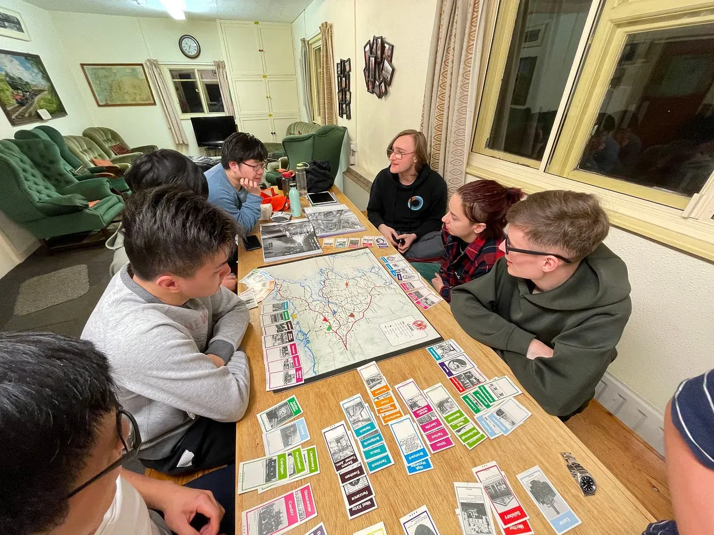
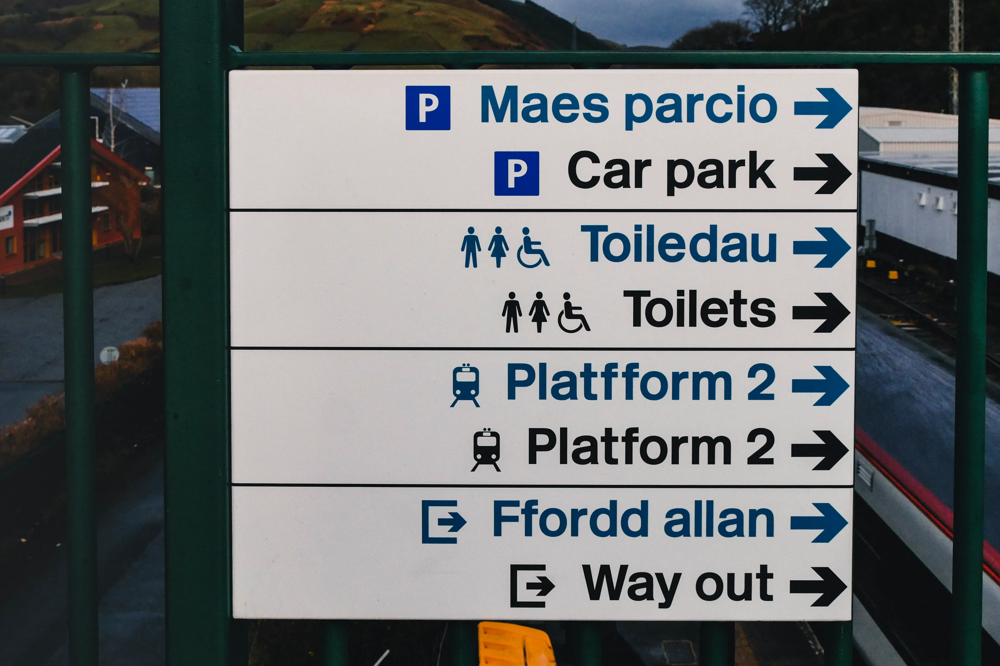

Blogs
Documenting my life beyond engineering!
Tag: volunteering
-
Wales 2022: Pronounce Penrhyndeudraeth?
 Every year, ICRTS organises a volunteering tour to the Ffes…
-
Ffestiniog and Welsh Highlands Heritage Railways Winter Volunteering Trip
 Machynlleth Footbridge, signage in both Welsh and English…
Search🔎
Tags 🏷️
annapurna barbican bath berlin cambridge cappadocia clouds colours diesel gcr geography hong kong ib icrts interrail iPhone istanbul japan journal kagoshima leicester london loughborough nepal personal photography photopoems solo-travel square steam sustainability tfl tibet travel tube turkey underground volunteering wales
Categories 😺
Recent comments 🔊
No comments to show.